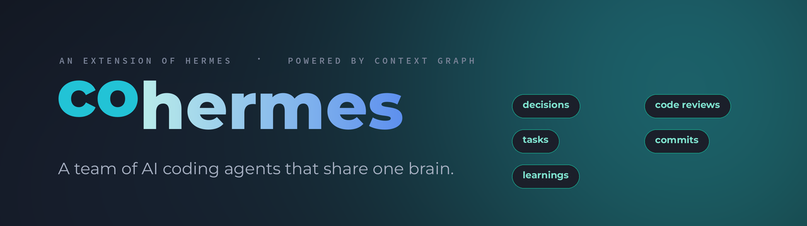

A team of AI coding agents that share one brain — a Hermes extension whose per-user memory becomes a shared, governed Context Graph.
Install, connect the shared brain, wire each developer, and run — with the -p vs tmux
decision and how context flows.
The two ways to run — opus-as-agent vs. cheap coordinator + opus workers — the orient → work → record loop, configuring your coordinator, and who pays for what.
Your design-first loop in cohermes — discuss & architect interactively, then delegate the coding to opus and watch it live via tmux, with Context Graph carrying every phase's artifacts.
The four layers of context, who calls tools/subagents/MCP, how results reach the model, and why the brain must stay curated. Illustrated.
The complete working log — vision, threat/goal model, every decision (A1–A3, D1–D13), the build, and the diagrams — grounded in the code.
Bringing any project into cohermes with one command — the six traps to encode, a global CLI +
.cohermes.yaml, and the non-destructive onboard flow. Design log.
The step-by-step to run the two-developer live test on real machines: CLI + UI, with success criteria.